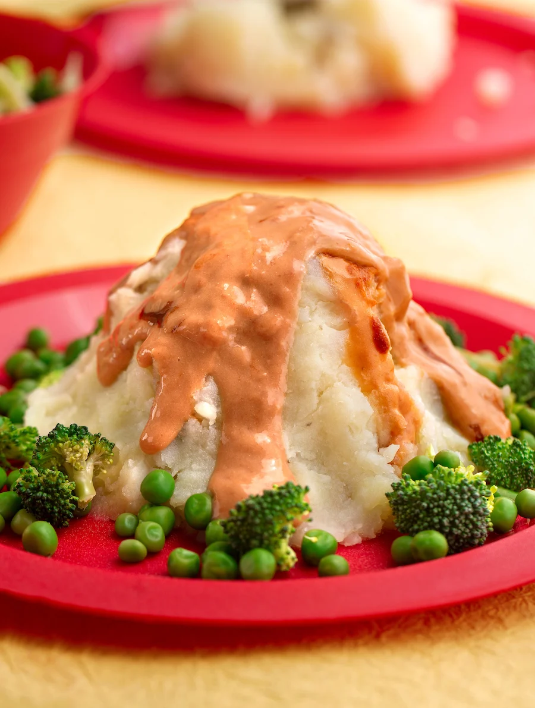
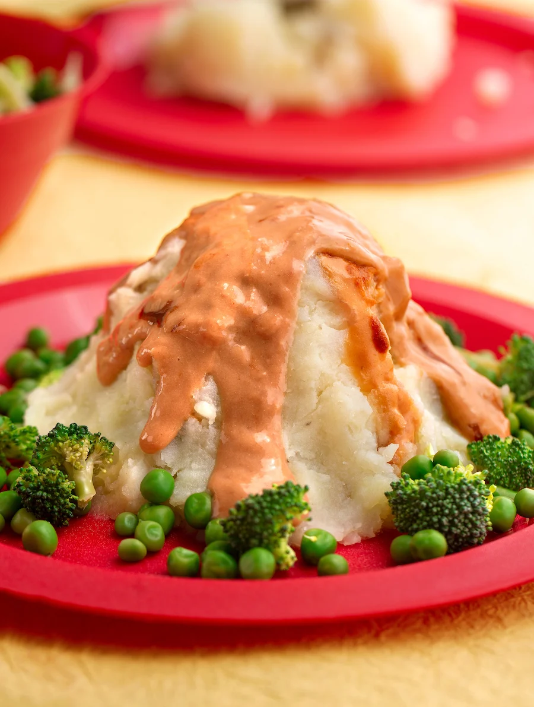
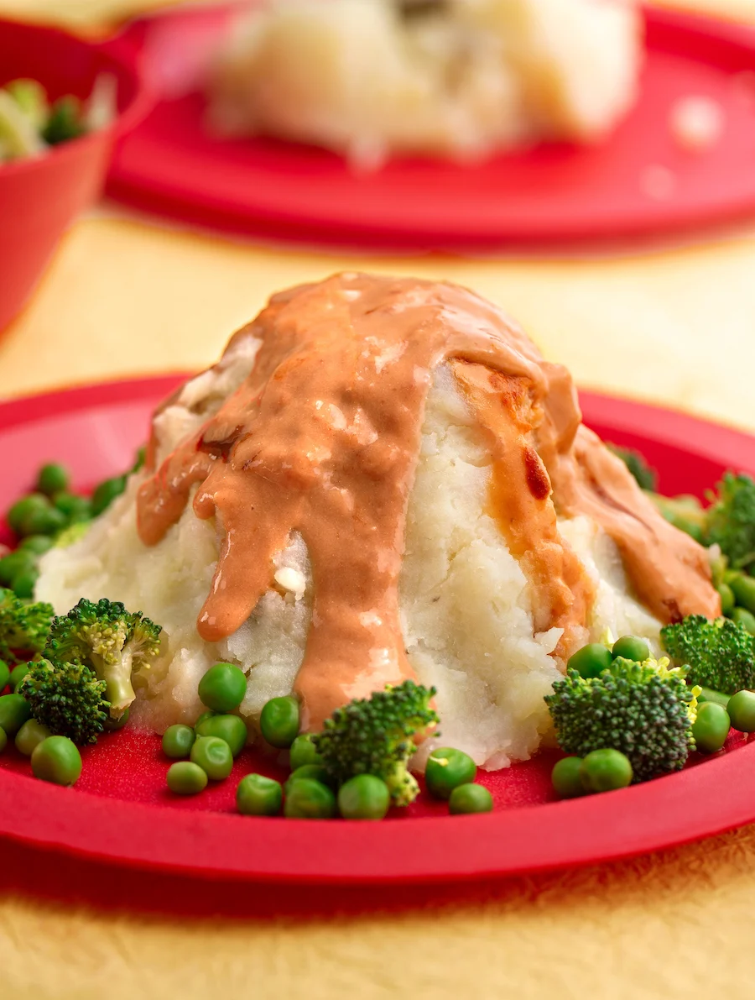

Tips från Coachen:
"Ett roligt recept som man kan göra
tillsammans med sina barn eller barnbarn"

Tips från Coachen:
"Ett roligt recept som man kan göra
tillsammans med sina barn eller barnbarn"
| Kalorier: 603,28kcal | Fett: 22,53g | Mättat fett: 12,96g | Transfett: 0,52g | Enkelomättat fett: 5,72g | Fleromättat fett: 1,19g |
| Kolhydrater: 82,44g | Fiber: 8,78g | Socker: 8,07g | Protein: 21,80g | Kolesterol: 69,02mg | |
| Natrium: 1394,42 mg | Kalcium: 402,66 mg | Kalium: 2409,73 mg | Järn: 4,05mg | Vitamin A: 216,63 µg | Vitamin C: 64,31mg |